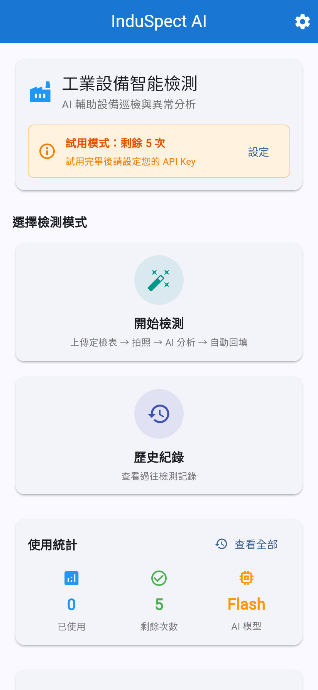
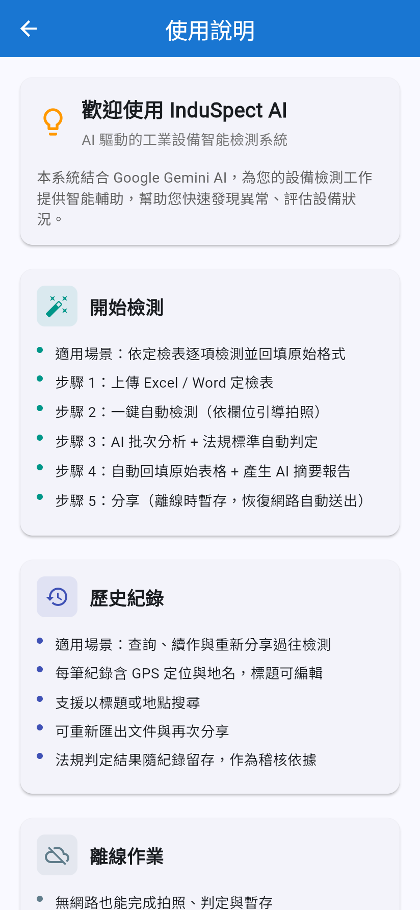
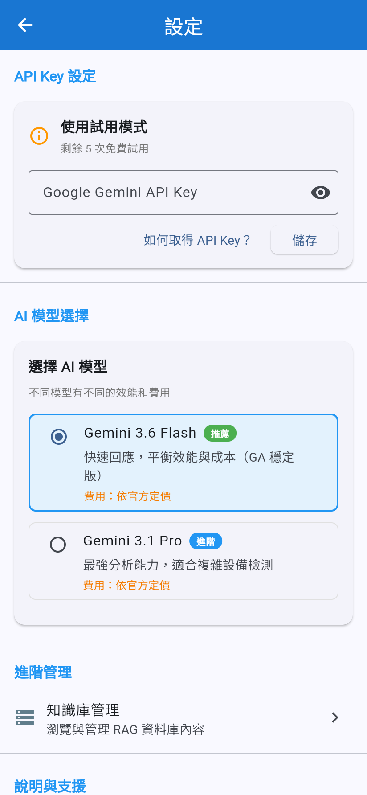

現場抄錶 → 回辦公室謄寫申報表；漏抄一項就得重回現場。
法規門檻與條文依據靠老師傅記憶；新人無從查證。
單位換算錯一個數量級，安全判定就翻轉。
單場所文書作業 40–60 分鐘，全都壓在申報季。



半年一次檢修申報。滅火器壓力上下限判定已內建；GPS 紀錄回應「未到場代簽」稽查風險。
高壓用電場所年度檢驗。絕緣電阻、接地電阻、漏電流的單位換算防呆正為此而生。
月巡檢自主檢查。批次拍照 + 趨勢紀錄，照片與判定形成可稽核軌跡。
壓力類 11 條標準。廠區常禁止照片上雲 → 正是離線與地端部署的目標客群。
| 產品 | 價格 | 缺少什麼 |
|---|---|---|
| SafetyCulture (iAuditor) | US$29 / 人 / 月 | 無台灣法規判定、無原格式回填，AI 僅做報告摘要 |
| MaintainX | US$16 / 人 / 月 | CMMS 導向，同上 |
| GoAudits / Lumiform | US$10 / 人 / 月 | 表單數位化為主，AI 讀值能力弱 |
| InduSpect AI | NT$300–600 / 人 / 月 | 台灣法規自動判定 + 條文引用 · 回填客戶原本的檔案 · 離線優先 |